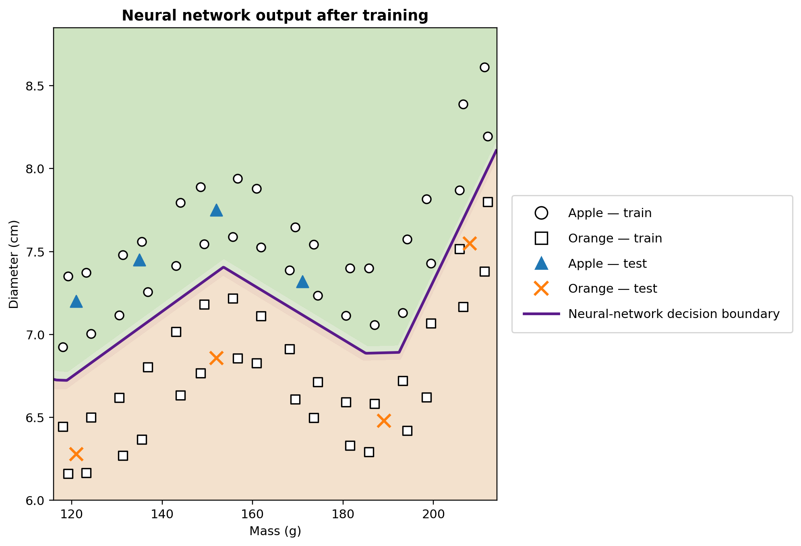

The Python example, step by step
This page is the computational core of NeuralMath. The code is deliberately small enough to read, but complete enough to show how a neural network actually learns.
1. Data: a broad but controlled domain
The training set contains 64 points and the illustrative test set contains 8. The points are synthetic, but their mass and diameter values are kept within plausible ranges. A smooth reference curve is used only to generate a nontrivial geometry; it is not given to the network.
def base_boundary(m):
return (
6.68
+ 0.74 * np.exp(-((m - 155) / 20) ** 2)
+ 1.50 / (1 + np.exp(-(m - 202) / 5))
)
X_train = np.vstack([a1, a2, l1, l2])
y_train = np.array([1.0] * 32 + [0.0] * 32)2. Standardization
Mass and diameter live on different numerical scales. The training-set mean and standard deviation are therefore used to transform both training and test inputs. The test data never determine the normalization parameters.
mean = X_train.mean(axis=0)
std = X_train.std(axis=0)
Xn = (X_train - mean) / std3. Architecture: 2–12–1
Two inputs feed a hidden layer with twelve ReLU neurons, followed by one sigmoid output. This gives 49 trainable parameters. The hidden layer is large enough to represent a visibly nonlinear boundary while remaining easy to inspect.
rng = np.random.default_rng(42)
W1 = 0.1 * rng.standard_normal((12, 2))
b1 = np.zeros(12)
W2 = 0.1 * rng.standard_normal(12)
b2 = 0.04. Forward propagation
For each input, the network computes an affine transformation, applies ReLU, combines the hidden activations, and finally applies the sigmoid. This is the prediction path.
z1 = W1 @ x + b1
h = relu(z1)
z2 = W2 @ h + b2
y_hat = sigmoid(z2)5. Backpropagation
The code differentiates the quadratic loss through the sigmoid and then through the ReLU layer. No automatic-differentiation framework is used: the chain rule appears explicitly in the program.
delta2 = (y_hat - target) * y_hat * (1 - y_hat)
dW2 = delta2 * h
db2 = delta2
delta1 = (delta2 * W2) * relu_derivative(z1)
dW1 = np.outer(delta1, x)
db1 = delta16. Stochastic gradient descent
At every epoch, the examples are shuffled. The parameters are updated after each example, and the mean training loss is recomputed with the parameters fixed at the end of the epoch.
for epoch in range(n_epochs):
for i in rng.permutation(len(Xn)):
# forward pass, backpropagation, update
W1 -= learning_rate * dW1
b1 -= learning_rate * db1
W2 -= learning_rate * dW2
b2 -= learning_rate * db27. The learned decision boundary
After training, the code evaluates the network on a dense mass–diameter grid. The level ŷ = 0.5 becomes the decision boundary. Every training point remains visible in the figure.
masses = np.linspace(116, 214, 500)
diameters = np.linspace(6.0, 8.85, 500)
M, D = np.meshgrid(masses, diameters)
grid = np.column_stack([M.ravel(), D.ravel()])
P = predict(grid, mean, std, W1, b1, W2, b2).reshape(M.shape)
ax.contour(M, D, P, levels=[0.5], linewidths=2.2)
8. Reproducibility
A fixed seed makes the experiment deterministic for the documented NumPy environment. The same script produces the figure distributed with the project.
rng = np.random.default_rng(42)
# The same training-set statistics, initialization,
# example order generator and hyperparameters are reused.